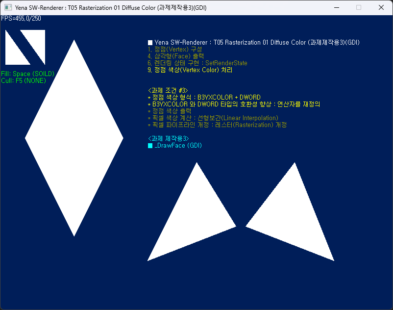
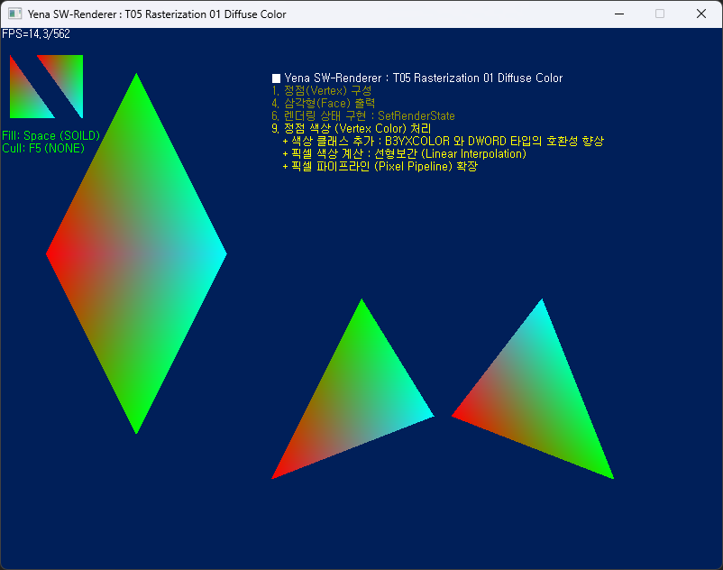
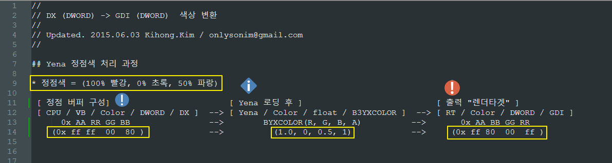

T05 Rasterization
01 Diffuse Color (과제제작용3)(GDI)
Yena SW Renderer Tutorials v1.5.x


예제 내용
- 과제 제작용
- 그리기 함수 GDI 사용.
- 사용자 그리기 함수로 변경.(과제)★
- 렌더링 파이프라인 구축
- 2D 정점 운용, 변환 없음
- 정점 버퍼 생성 및 운용
- 정점 구조(FVF) 설정
- 렌더링 상태 조절
- 렌더링 API 추가 및 개정
- 정점색 적용 (과제) ★
- 정점 구조(FVF) 변경
- 정점색 추가 (DWORD)
- 정점색 추가 (B3YXCOLOR) ★
- 색상 구조체/클래스 연산자 추가
- B3YXCOLOR 와 DWORD 호환성 증대 (+연산자추가) ★
- 개정 내역
struct COLVXT : 색상 추가
struct B3YCOLOR : 연산자 추가
struct B3YXCOLOR : 연산자 추가
ynMath
IYenaDevice9
- Yena 개정 (25.0619)
- Yena 운용 함수명 접두어 변경
- 구형 호환성 유지용 재정의 포함
(구) YnSort
(신) ynSort
#define YnSort ynSort
목표 및 과제
- SWR 렌더링 파이프라인 구성 (1)
- SWR 기하 버퍼 구성 (1)
- 삼각형 그리기, 채우기 (사용자 함수)
- 삼각형 선별 : Wireframe, Back-Face Culling (사용자 함수)
- 삼각형 색상 채우기 : 정점색 처리.
todo
- Todo
- ⭐ 정점색 적용 (과제)
- 정점 구조(FVF) 변경
- 정점색 추가 (DWORD)
- 정점색 추가 (B3YXCOLOR) ★
- 삼각형 6개 그리기
- Todo
- ⭐ 색상클래스 제작
- 색상 구조체/클래스 연산자 추가
- B3YXCOLOR 와 DWORD 호환성 증대 (+연산자추가) ★
- Todo
- ⭐ 사용자 그리기 함수 제작
- B3YenaDevice9::_DrawLine
- B3YenaDevice9::_DrawFace
- GDI 사용 안함 (SetPixel 제외)
- 색상 보간 : 정점 버퍼내 색상 준수 ★
- GDI 색상구조 변환 주의.

기본 제공
- 애플리케이션 프레임워크 생성.
- 메세지 펌핑 처리 개선.
- 32/64비트 지원
- 작업영역 색상변경 (DarkGray)
- 윈도 중앙 이동
프로젝트 개요
- 기본 구성
- Windows Desktop Application
- 32/64비트 지원
- 유니코드 버전 (UTF-8)
- 예제 소스 구성
- 상세내역
-문서 끝- 2025 ⓒ Kihong.Kim / onlys.nosp@m.onim.nosp@m.@gmai.nosp@m.l.co.nosp@m.m
 1.14.0
1.14.0